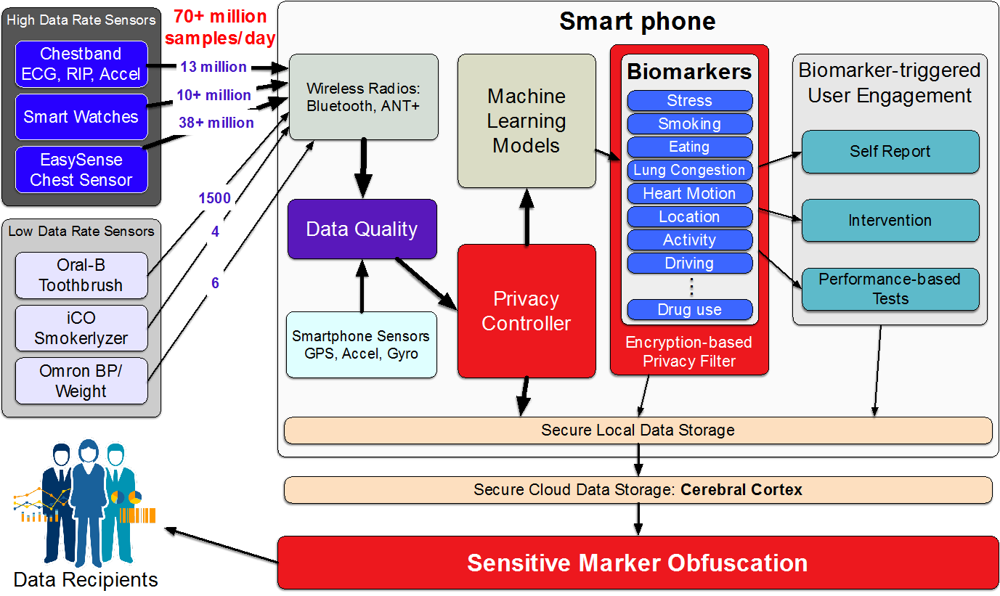

Future Research Agenda
MD2K's goal has been to demonstrate that the key to improving your health can be the cellphone in your hand or the smartwatch on your wrist. In pursuit of this goal, MD2K has developed the tools that make it possible to take complex, high-frequency mobile sensor data and turn it into something more meaningful than a heart rate or step count.
This has been done by harnessing the sensors commonly found in smartphones and fitness trackers, along with creating some new ones, to find indicators of health states that provide insight into conditions such as drug addiction, smoking, heart failure and obesity.
The mobile sensor data sources used by MD2K are:
• AutoSense: Electrocardiogram (ECG), respiration, accelerometers
• Microsoft Band: Accelerometers, gyroscopes
• MotionSense: Accelerometers, gyroscopes
• EasySense (contactless sensors): Heart motion, lung motion, lung fluid level
• Smartphone Sensors: Global Positioning System (GPS), accelerometers, self-report
• Smart toothbrush: Brushing motion, pressure, tooth location
Traditionally, mHealth researchers have tried to pull biomarker data directly from the sensors and use it in biomedical research. This method poses challenges, because raw sensor data often contains gaps and noise, and the number of samples collected per day is in the hundreds.
MD2K’s approach is to collect millions of samples per day, and process that data through its mCerebrum software suite to identify, develop and validate biomarkers that can be used in research.
A mobile software platform developed by MD2K is capable of collecting 55 million mobile sensor samples per day from high- and low-frequency sensors.
Publications
James M Rehg, Susan A Murphy and Santosh Kumar (eds.).
Modeling Opportunities in mHealth Cyber-Physical Systems. pages 443–453, Springer International Publishing, 2017. URL, DOI BibTeX@inbook{Nilsen2017, pages = "443--453", title = "Modeling Opportunities in mHealth Cyber-Physical Systems", publisher = "Springer International Publishing", year = 2017, author = "Nilsen, Wendy and Ertin, Emre and Hekler, Eric B. and Kumar, Santosh and Lee, Insup and Mangharam, Rahul and Pavel, Misha and Rehg, James M. and Riley, William and Rivera, Daniel E. and Spruijt-Metz, Donna", editor = "Rehg, James M. and Murphy, Susan A. and Kumar, Santosh", address = "Cham", isbn = "978-3-319-51394-2", abstract = "Cyber-physical systems, with their focus on creating closed-loop systems, have transformed a wide range of areas (e.g., flight systems, industrial plants, robotics, etc.). However, even after a century of health research we still lack dynamic computational models of human health and its interactions with the environment, let alone a full closed-loop cyber-physical system. A major hurdle to developing cyber-physical systems in the medical and health fields has been the lack of high-resolution data on changes in both outcomes and predictive variables in the natural environment. There are many public and private initiatives addressing these measurement issues and the health research community is witnessing rapid progress in this area. Consequently, there is an emerging opportunity to develop cyber-physical systems for mobile health (mHealth). This chapter describes research challenges in developing cyber-physical system models to build effective and safe mHealth interventions. Doing so involves significant advances in modeling of health, biology, and behavior and their interactions with the environment and response of humans to the mHealth interventions.", booktitle = "Mobile Health: Sensors, Analytic Methods, and Applications", doi = "10.1007/978-3-319-51394-2_23", url = "https://md2k.org/images/papers/research-agenda/ModelingOpportunities17.pdf" }S Kumar, G Abowd, W T Abraham, M al'Absi, D H Chau, E Ertin, D Estrin, D Ganesan, T Hnat, S M Hossain, Z Ives, J Kerr, B M Marlin, S Murphy, J M Rehg, I Nahum-Shani, V Shetty, I Sim, B Spring, M Srivastava and D Wetter.
Center of Excellence for Mobile Sensor Data-to-Knowledge (MD2K). IEEE Pervasive Computing 16(2):18-22, 2017. URL, DOI BibTeX@article{7891193, author = "S. Kumar and G. Abowd and W. T. Abraham and M. al'Absi and D. H. Chau and E. Ertin and D. Estrin and D. Ganesan and T. Hnat and S. M. Hossain and Z. Ives and J. Kerr and B. M. Marlin and S. Murphy and J. M. Rehg and I. Nahum-Shani and V. Shetty and I. Sim and B. Spring and M. Srivastava and D. Wetter", title = "Center of Excellence for Mobile Sensor Data-to-Knowledge (MD2K)", journal = "IEEE Pervasive Computing", year = 2017, volume = 16, number = 2, pages = "18-22", issn = "1536-1268", abstract = "The National Center of Excellence for Mobile Sensor Data-to-Knowledge (MD2K) was established in October 2014 with a grant from the National Institutes of Health under the Big Data-to-Knowledge (BD2K) program. Among the 11 centers of excellence originally funded, MD2K's unique contribution is to develop innovative tools to make it easier to gather, analyze, interpret, and capitalize on high-frequency data from mobile sensors. It seeks to facilitate the monitoring of health states and quantify the temporal dynamics of key physical, biological, behavioral, psychological, social, and environmental factors that contribute to the health and disease risks of individuals. MD2K's overarching goal is to reduce the burden that complex chronic disorders place on health and healthcare by making it feasible to detect and predict person-specific disease risk factors ahead of the onset of adverse clinical events, supporting sensor-driven just-in-time interventions. To demonstrate the utility and wide generalizability of the research and tools developed by MD2K, we initially targeted two biomedical applications—improving the success rate for smoking cessation and reducing the number of rehospitalizations in congestive heart failure (CHF). Our two chosen biomedical applications are at the opposite ends of the temporal spectrum of mortality. Smoking is the leading cause of mortality, causing 1 in 5 deaths, but its mortality risk is far in the future. On the other hand, CHF, which is the leading cause of preventable rehospitalization with a readmission rate of 27 percent, has an immediate mortality risk. The first (of three) iterations of these two studies with 75 participants each is currently underway. In addition, the biomedical applications addressed by MD2K have expanded to managing stress, reducing overeating, reducing cocaine use, and improving oral health.", doi = "10.1109/MPRV.2017.29", pubstate = "published", tppubtype = "article", url = "http://ieeexplore.ieee.org/stamp/stamp.jsp?arnumber=7891193 https://md2k.org/images/papers/research-agenda/07891193_md2k_pervasive-health.pdf" }Barbara E Bierer, Rebecca Li, Mark Barnes and Ida Sim.
A Global, Neutral Platform for Sharing Trial Data. New England Journal of Medicine, 2016. URL BibTeX@article{bierer2016global, author = "Barbara E Bierer and Rebecca Li and Mark Barnes and Ida Sim", title = "A Global, Neutral Platform for Sharing Trial Data", journal = "New England Journal of Medicine", year = 2016, abstract = "Sharing clinical trial data is critical in order to inform clinical and regulatory decision making and honor trial partici-pants who put themselves at risk to advance science. A recent In-stitute of Medicine (IOM) report argues that availability of de-identified (anonymized) patient-level data from clinical trials can permit verification of original results, enhancing public trust and accountability; facilitate other critical research (e.g., evaluation of adverse event rates according to compound class or subpopula-tion or identification of surro-gate end points); and avert dupli-cate trials, shielding participants from unnecessary risk.1 If such goals are to be achieved, patient-level data must be readily find-able and available for aggrega-tion and analysis across multiple sources to enable the widest range of secondary research uses.", publisher = "Massachusetts Medical Society", pubstate = "published", tppubtype = "article", url = "https://md2k.org/images/papers/software/nejmp1605348_Sim.pdf" }David Kotz, Carl A Gunter, Santosh Kumar and Jonathan P Weiner.
Privacy and Security in Mobile Health: A Research Agenda. Computer 49(6):22-30, 2016. URL, DOI BibTeX@article{Kotz2016, author = "David Kotz and Carl A Gunter and Santosh Kumar and Jonathan P Weiner", title = "Privacy and Security in Mobile Health: A Research Agenda", journal = "Computer", year = 2016, volume = 49, number = 6, pages = "22-30", abstract = "Mobile health technology has great potential to increase healthcare quality, expand access to services, reduce costs, and improve personal wellness and public health. However, mHealth also raises significant privacy and security challenges.", doi = "10.1109/MC.2016.185", keywords = "Biomedical monitoring, Computer Security, Medical services, mHealth, mobile, Mobile communication, mobile health, privacy, Security, Smart phones", pubstate = "published", tppubtype = "article", url = "https://www.computer.org/csdl/mags/co/2016/06/mco2016060022-abs.html" }Addison Mayberry, Yamin Tun, Pan Hu, Duncan Smith-Freedman, Deepak Ganesan, Benjamin M Marlin and Christopher Christopher Salthouse.
THE I IN THE EYE. GetMobile: Mobile Computing and Communications 20(2):27–30, 2016. URL BibTeX@article{mayberry2016eye, author = "Addison Mayberry and Yamin Tun and Pan Hu and Duncan Smith-Freedman and Deepak Ganesan and Benjamin M Marlin and Christopher Salthouse, Christopher", title = "THE I IN THE EYE", journal = "GetMobile: Mobile Computing and Communications", year = 2016, volume = 20, number = 2, pages = "27--30", abstract = "The eye is a truly unique and fascinating piece of physiology. Through it, organisms take in massive amounts of sensory data; through it, they also communicate emotion and intent both consciously and unconsciously. It is so tightly coupled with the operation of the brain that even slight mental blocks like being tired are measurable through eye movements. Eye-related research has long worn out the cliché “the eyes are the window to the soul,” and this is largely because there is a deeper truth behind this phrase that has come to light in the last several decades of psychology and neurology research. In short, we now understand that the eyes are the best window to the mind.", publisher = "ACM", pubstate = "published", tppubtype = "article", url = "https://md2k.org/images/papers/research-agenda/p27-mayberry_Eye.pdf" }Walter Dempsey, Peng Liao, Pedja Klasnja, Inbal Nahum-Shani and Susan A Murphy.
Randomised trials for the Fitbit generation. Significance 12(6):20–23, 2015. URL, DOI BibTeX@article{SIGN:SIGN863, author = "Walter Dempsey and Peng Liao and Pedja Klasnja and Inbal Nahum-Shani and Susan A. Murphy", title = "Randomised trials for the Fitbit generation", journal = "Significance", year = 2015, volume = 12, number = 6, pages = "20--23", issn = "1740-9713", abstract = "Data from activity trackers and mobile phones can be used to craft personalised health interventions. But measuring the efficacy of these “treatments” requires a rethink of the traditional randomised trial. By Walter Dempsey, Peng Liao, Pedja Klasnja, Inbal Nahum-Shani and Susan A. Murphy", doi = "10.1111/j.1740-9713.2015.00863.x", pubstate = "published", tppubtype = "article", url = "https://md2k.org/images/papers/research-agenda/Dempsey_et_al-2015-Significance.pdf" }Santosh Kumar, Gregory D Abowd, William T Abraham, Mustafa al’Absi, Gayle J Beck, Duen Horng Chau, Tyson Condie, David E Conroy, Emre Ertin, Deborah Estrin, Deepak Ganesan, CHo Lam, Benjamin Marlin, Clay B Marsh, Susan A Murphy, Inbal Nahum-Shani, Kevin Patrick, James M Rehg, Moushumi Sharmin, Vivek Shetty, Ida Sim, Bonnie Spring, Mani Srivastava and David W Wetter.
Center of excellence for mobile sensor Data-to-Knowledge (MD2K). Journal of the American Medical Informatics Association, pages ocv056, 2015. URL BibTeX@article{kumar2015center, author = "Santosh Kumar and Gregory D. Abowd and William T. Abraham and Mustafa al’Absi and J. Gayle Beck and Duen Horng Chau and Tyson Condie and David E. Conroy and Emre Ertin and Deborah Estrin and Deepak Ganesan and CHo Lam and Benjamin Marlin and Clay B. Marsh and Susan A. Murphy and Inbal Nahum-Shani and Kevin Patrick and James M. Rehg and Moushumi Sharmin and Vivek Shetty and Ida Sim and Bonnie Spring and Mani Srivastava and David W. Wetter", title = "Center of excellence for mobile sensor Data-to-Knowledge (MD2K)", journal = "Journal of the American Medical Informatics Association", year = 2015, pages = "ocv056", abstract = "Mobile sensor data-to-knowledge (MD2K) was chosen as one of 11 Big Data Centers of Excellence by the National Institutes of Health, as part of its Big Data-to-Knowledge initiative. MD2K is developing innovative tools to streamline the collection, integration, management, visualization, analysis, and interpretation of health data generated by mobile and wearable sensors. The goal of the big data solutions being developed by MD2K is to reliably quantify physical, biological, behavioral, social, and environmental factors that contribute to health and disease risk. The research conducted by MD2K is targeted at improving health through early detection of adverse health events and by facilitating prevention. MD2K will make its tools, software, and training materials widely available and will also organize workshops and seminars to encourage their use by researchers and clinicians.", publisher = "The Oxford University Press", pubstate = "published", tppubtype = "article", url = "https://md2k.org/images/papers/research-agenda/md2k_jamia.pdf" }Santosh Kumar, Wendy J Nilsen, Amy Abernethy, Audie Atienza, Kevin Patrick, Misha Pavel, William T Riley, Albert Shar, Bonnie Spring, Donna Spruijt-Metz, Donald Hedeker, Vasant Honavar, Richard Kravitz, Craig R Lefebvre, David C Mohr, Susan A Murphy, Charlene Quinn, Vladimir Shusterman and Dallas Swendeman.
Mobile health technology evaluation: the mHealth evidence workshop.. American journal of preventive medicine 45:228-36, August 2013. URL BibTeX@article{Kumar2013, author = "Kumar, Santosh and Nilsen, Wendy J. and Abernethy, Amy and Atienza, Audie and Patrick, Kevin and Pavel, Misha and Riley, William T. and Shar, Albert and Spring, Bonnie and Spruijt-Metz, Donna and Hedeker, Donald and Honavar, Vasant and Kravitz, Richard and Lefebvre, R. Craig and Mohr, David C. and Murphy, Susan A. and Quinn, Charlene and Shusterman, Vladimir and Swendeman, Dallas", title = "Mobile health technology evaluation: the mHealth evidence workshop.", journal = "American journal of preventive medicine", year = 2013, volume = 45, pages = "228-36", month = "Aug", abstract = "Creative use of new mobile and wearable health information and sensing technologies (mHealth) has the potential to reduce the cost of health care and improve well-being in numerous ways. These applications are being developed in a variety of domains, but rigorous research is needed to examine the potential, as well as the challenges, of utilizing mobile technologies to improve health outcomes. Currently, evidence is sparse for the efficacy of mHealth. Although these technologies may be appealing and seemingly innocuous, research is needed to assess when, where, and for whom mHealth devices, apps, and systems are efficacious. In order to outline an approach to evidence generation in the field of mHealth that would ensure research is conducted on a rigorous empirical and theoretic foundation, on August 16, 2011, researchers gathered for the mHealth Evidence Workshop at NIH. The current paper presents the results of the workshop. Although the discussions at the meeting were cross-cutting, the areas covered can be categorized broadly into three areas: (1) evaluating assessments; (2) evaluating interventions; and (3) reshaping evidence generation using mHealth. This paper brings these concepts together to describe current evaluation standards, discuss future possibilities, and set a grand goal for the emerging field of mHealth research.", address = "Netherlands", article-doi = "10.1016/j.amepre.2013.03.017", article-pii = "S0749-3797(13)00277-8", completed = 20131104, electronic-issn = "1873-2607", grantno = "Z99 OD999999/Intramural NIH HHS/United States", history = "2013/03/22 [accepted]", issue = 2, keywords = "*Biomedical Technology/methods/standards/trends, Computer Security, Diffusion of Innovation, Forecasting, Humans, *Outcome Assessment (Health Care)/methods/organization & administration/trends, Quality Improvement/organization & administration, Quality of Health Care/standards, Reproducibility of Results, *Telemedicine/methods/standards/utilization", language = "eng", linking-issn = "0749-3797", location-id = "S0749-3797(13)00277-8 [pii]", manuscript-id = "NIHMS494305", nlm-unique-id = 8704773, other-id = "NLM: PMC3803146", owner = "NLM", publication-status = "ppublish", revised = 20170220, source = "Am J Prev Med. 2013 Aug;45(2):228-36. doi: 10.1016/j.amepre.2013.03.017.", status = "MEDLINE", subset = "IM", title-abbreviation = "Am J Prev Med", url = "https://md2k.org/images/papers/research-agenda/nihms494305_Kumar17.pdf" }Misha Pavel, Wendy Nilsen, Santosh Kumar and Mani Srivastava.
Mobile Health: Revolutionizing Healthcare Through Transdisciplinary Research. Computer 46:28-35, 2013. URL, DOI BibTeX@article{10.1109/MC.2012.392, author = "Misha Pavel, and Wendy Nilsen, and Santosh Kumar, and Mani Srivastava,", title = "Mobile Health: Revolutionizing Healthcare Through Transdisciplinary Research", journal = "Computer", year = 2013, volume = 46, pages = "28-35", issn = "0018-9162", abstract = "Mobile health (mHealth) seeks to improve individuals' health and well-being by continuously monitoring their status, rapidly diagnosing medical conditions, recognizing behaviors, and delivering just-in-time interventions, all in the user's natural mobile environment. The Web extra at http://youtu.be/o2mieSywutY is an audio interview in which Santosh Kumar, Wendy Nilsen, and Mani Srivastava discuss the path toward realizing mobile health systems.", address = "Los Alamitos, CA, USA", doi = "doi.ieeecomputersociety.org/10.1109/MC.2012.392", publisher = "IEEE Computer Society", url = "https://md2k.org/images/papers/research-agenda/Revolution17.pdf" }